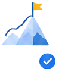
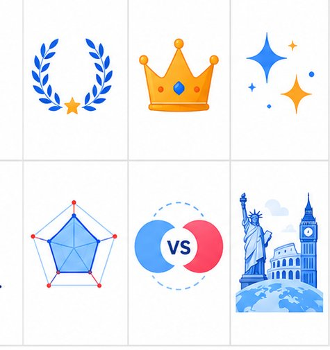

🎯 5問で最適な試験を判定
留学先・目的・英語力・学習スタイル・対策期間の5問に答えるだけ。あなたに有利な試験をその場で判定します。
留学先・目的・英語レベルから、あなたに最適な試験を AIが診断。TOEFL／IELTSの違い、スコア換算表、費用比較、大学要件まで完全網羅します。
迷いがちなTOEFLとIELTSの選択を、データと診断ロジックでサポートします
留学先・目的・英語力・学習スタイル・対策期間の5問に答えるだけ。あなたに有利な試験をその場で判定します。
TOEFL iBTとIELTSバンドスコアの対応を一覧で確認。目標スコアの設定がひと目でわかります。
米国はTOEFL、英国・豪州はIELTSなど、志望国・目的に応じた一般的な優位性を判定に反映します。
受験料の目安、試験形式（PC／対面）、スピーキング方式まで横並びで比較できます。
診断結果に応じて、4技能の対策ステップと学習プランを提示。次に何をすべきかが明確になります。

会員登録なし、入力データはブラウザ内で処理。完全無料でいつでも何度でも診断できます。
4技能の傾向・形式・受験料まで、選択の決め手になる項目を一覧化
| 項目 | TOEFL iBT | IELTS |
|---|---|---|
| 主な対象国 | 米国・カナダ | 英国・豪州・NZ |
| 試験形式 | 全てPC | PC または 紙 |
| スピーキング | マイク録音 | 試験官と対面 |
| スコア | 0〜120点 | 0〜9.0 バンド |
| 有効期限 | 2年 | 2年 |
| 受験料(目安) | 約35,000円 | 約27,000円 |
登録不要。質問に答えるだけで、あなたに最適な試験がすぐ分かります
留学先・目的・英語力など、選択式の5問にタップで答えるだけ。約2分で完了します。
TOEFLとIELTSの適合度をスコアとグラフで表示。おすすめの理由も詳しく解説します。
目標スコアと対策ロードマップを確認。結果は印刷・コピー・CSV保存にも対応しています。
TOEFL iBT と IELTS のおおよその対応関係（目安）
| TOEFL iBT | IELTS |
|---|---|
| 61〜64 | 5.5 |
| 65〜78 | 6.0 |
| 79〜93 | 6.5 |
| 94〜101 | 7.0 |
| 102〜109 | 7.5 |
| 110〜120 | 8.0〜9.0 |


米国・カナダの大学・大学院はTOEFLを要件とする場合が多く、英国・オーストラリア・ニュージーランドの大学はIELTSを求めることが一般的です。近年は両方を受け入れる大学も増えているため、志望校の公式英語要件を必ず確認してください。
公式の完全な換算表はありませんが、目安としてIELTS 6.0 ≈ TOEFL iBT 60〜64点、IELTS 6.5 ≈ TOEFL 79〜80点、IELTS 7.0 ≈ TOEFL 94〜95点が参考値として使われます。
完全無料・登録不要です。5つの質問に答えるだけで、その場で最適な試験と目標スコア、対策ロードマップが表示されます。何度でもご利用いただけます。
技術的には可能ですが、まずはTOEIC 600点相当の基礎英語力を身につけてからの受験をおすすめします。診断では現在の英語力に応じた試験と学習プランを提示します。